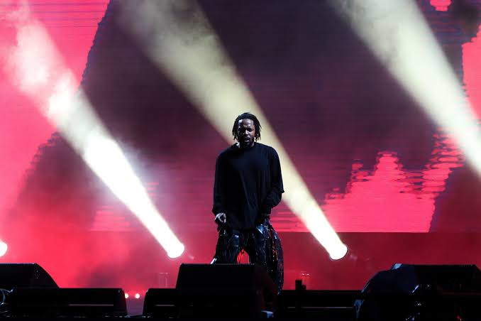
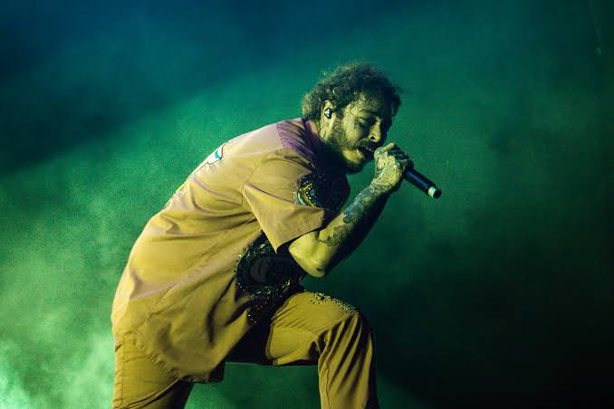
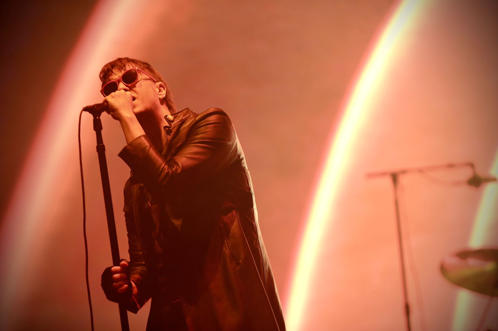
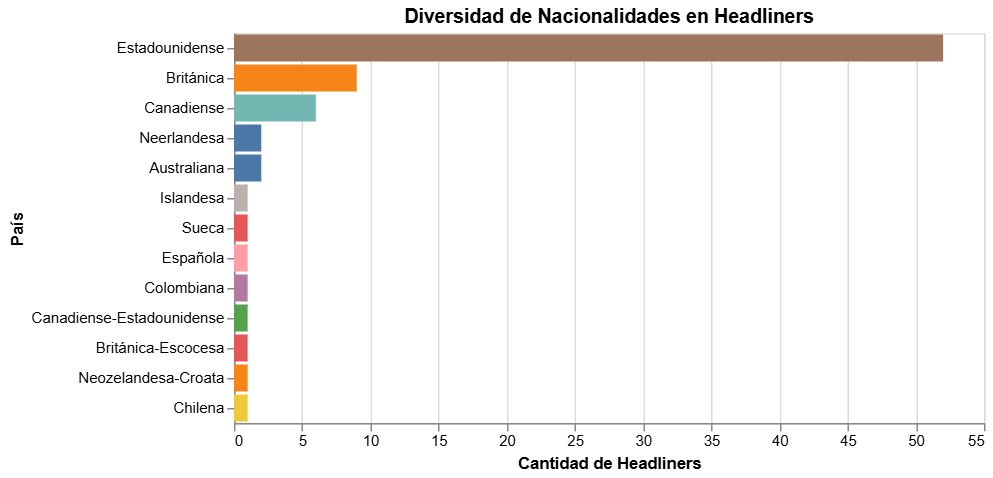

Así es, porque actualmente la nacionalidad que más predomina en los artistas headliners que vienen a Lollapalooza en Chile son de nacionalidad estadounidense, alcanzando más de 50 artistas desde la primera edición del festival en el año 2011. Las nacionalidades que le siguen son la británica, con 9 headliners y la canadiense, con 6 headliners. Chile solo ha tenido un headliner en el festival, en la edición de este año. Los Bunkers lograron un hito histórico al posicionarse como la primera banda chilena en ser artista principal en la edición 2026. Otro aspecto importante a destacar en Lollapalooza Chile es la inclusión de headliners de más de 10 nacionalidades distintas, lo que lo vuelve un festival con una amplia diversidad muscical y acorde al artista "popular" del momento.



